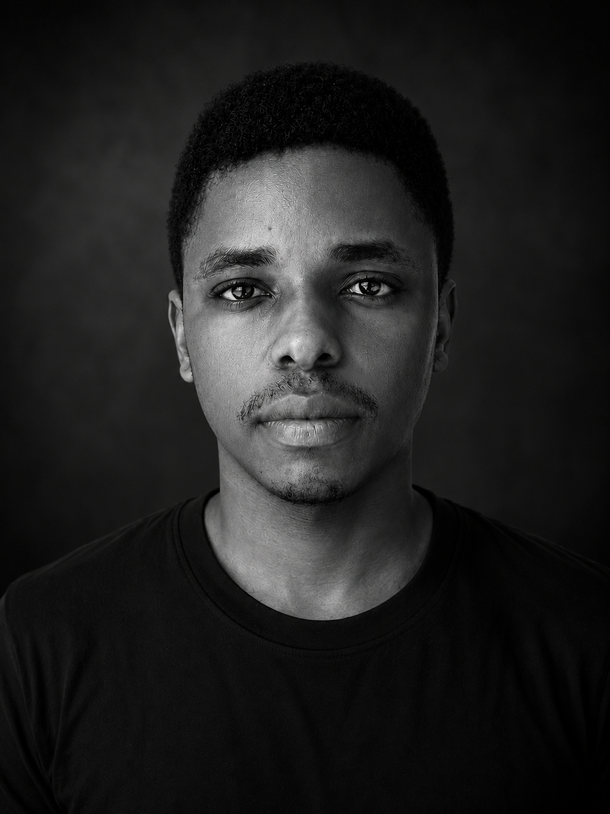

01 / SOFTWARE
Construção com lógica
Aplicações web e desktop, sistemas de informação, algoritmos e organização modular.
Beira, Moçambique · Informática & Design
Sou Noé Samuel Vilanculos, estudante de Informática e designer gráfico. Transformo problemas em experiências digitais claras, funcionais e pensadas para o contexto moçambicano.

Perfil
Programação, design e pensamento de produto reunidos para criar soluções úteis e acessíveis.
01 / SOFTWARE
Aplicações web e desktop, sistemas de informação, algoritmos e organização modular.
02 / DESIGN
Identidade, tipografia e comunicação visual com atenção à experiência de quem utiliza.
03 / IMPACTO
Interesse por educação, empregabilidade e transformação digital em Moçambique.
A tecnologia ganha valor quando compreende as pessoas e o contexto que pretende servir.